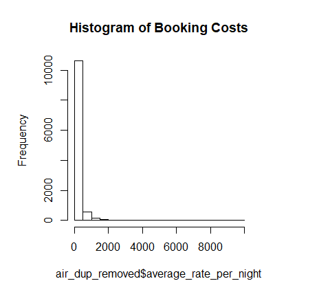
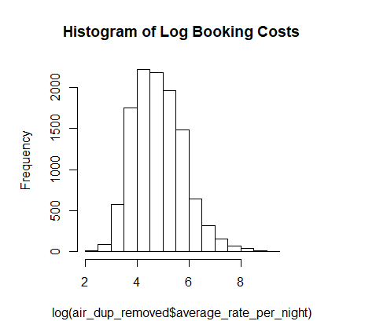
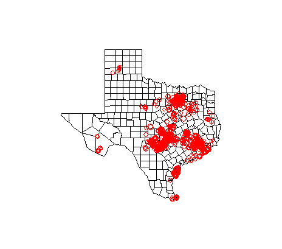
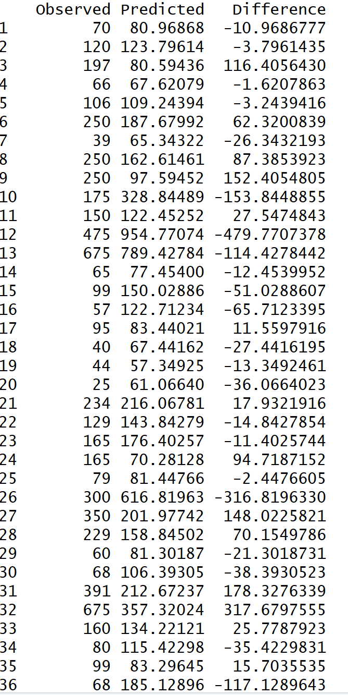
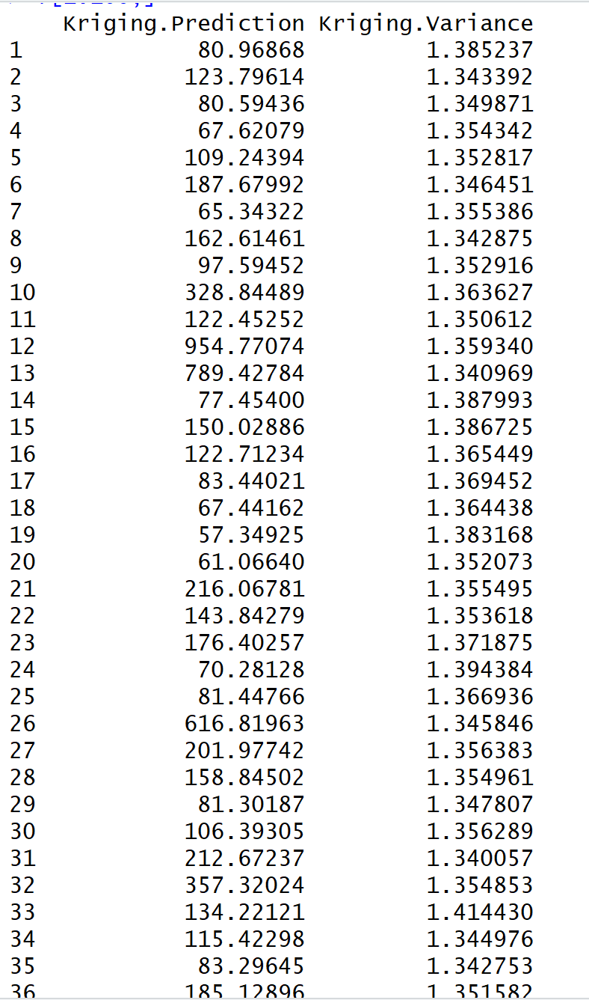

by Jaspreet Kang
In this article, we will be trying different kriging methods to predict AirBnb prices in Texas as accurately as possible. The reason we will be utiliizing geospatial statistical methods is because there are only 4 predictor variables that are of use to us:
The dataset I am using is from Kaggle. I will put a download link at the end. The dataset is quite large, which can be computationally taxing to your computer. When performing Kriging and cross validation, my RStudio crashed. For the sake of this article, I reduced the dataset to 2,500 houses. However, this problem can be easily fixed by performing parallel kriging, but that is beyond the scope of this article.
The process of creating a predictor model through kriging can be split into 5 parts:
The first step, always, to data analysis is understanding and cleaning up the data. We know what we are trying to predict (AirBnb booking costs per night). We know what our predictor variables are (location in longitude and latitude, bedrooms, and Date of Listing). We check the structure of our dataset, and it turns out that the variables Booking_cost and Bedrooms_counts are stored as factors. . Each observation for Booking_cost has the string '$' attached in front of a number, meaning the data is inputted as '$48' for example. We want to get rid of the dollar sign so that we can convert the variable to a numeric type. To do this, we use the gsub function.
Now that we successfully converted the Booking_cost variable to a numeric type, we move on to converting Bedrooms_count variable. The levels of this factor variable includes " " (meaning NA), "Studio", "1", up to "13" bedrooms. We want to convert "Studio" to "0", and " " to "NA". After we change the levels, we convert the factor to the desired type, numeric.
After getting the desired structure of the dataset, next step is to check for NA values. We can do this easily by using is.na within the colSums function. Surprisingly a low number of NA values exist: 34 for Longitude, Latitude, and Booking_cost, and 3 NA values for Bedrooms_count. We index the row numbers for which the NA values exist for the variable Latitude, and remove these rows or observations altogether from the dataset. The reason why we remove the NA values instead of changing it to the mean or median is because coordinates are an exact piece of information that cannot be guessed or predicted. Additionally, our dataset is so large that removing 34 observations won't affect our model.
After removing the 34 observations, we check for NA values again, and see no more NA values exist under Longitude, Latitude, and Booking_cost. However, the 3 NA values still exist under Bedrooms_count. We index those NA values and simply remove the 3 observations. Now we have a clean dataset with no more NA values, so we can move on to the second part.
Duplicate coordinates can be an issue when performing geospatial statistics as we do not want repeating coordinates and information because of its possible unwanted effect on the semivariogram model. Remember that the semi-variance is a measure of the spatial dependence between two observations as a function of the distance between them. The semivariogram is how the semivariance changes as the distance between observations changes. To check for duplicate coordinates, we use the duplicated function.
We chose to remove all duplicate coordinates since the Booking_cost for each were either exactly the same or really close. A tedious but more effective solution would be to take the mean of Booking_cost of the original + the duplicate coordinates, remove the duplicate coordinates, and change the original Booking_cost value to the mean.
Before looking at the semivariogram, we perform some preliminary analysis that will help us in modeling the semivariogram. First we check the distribution of our response variable, Booking_costs, to see if it needs a transformation.
The histogram shows clear skewness to the right. We do a log transformation.
The transformation worked well as we see a normal distribution. Next we perform linear regression to check for which predictor variables are significant. This can help us with potentially de-trending the model when constructing the semivariogram model. The linear regression model shows that Bedrooms_count is significant, but Date_of_listing is not.
Next we look at a h-scatterplot, which is a scatterplot of our lagged distances (h). To do this, the gstat library is required.
The h-scatterplot shows us that there is a very weak correlation between the distances, which means there is weak spatial correlation. This is a bit surprising, as one would expect AirBnb prices to be around the same in one area, and vastly different in other areas. However, sometimes a weak spatial correlation exists depending on the dataset given. This is what we are trying to figure out when performing spatial analysis. We can go ahead and construct our semivariogram model.
Since we are trying to create a model that predicts AirBnb Booking costs as accurately as possible, we split our data into a training set and testing set. we randomly sample 70% of the observations, leaving the rest of the 30% to be our testing set. Below is a bubble plot of our training set on the map of Texas and the following code.
We use the library gstat over geoR for this specific case since our response variable is transformed with a logarithm. The formula argument in the gstat function allows you to de-trend the data. We de-trend the data with Bedrooms_count since this predictor variable is the only significant variable. The code below plots the omnidirectional variogram and variogram at 4 directions: South-North, Southwest-Northeast, West-East, and Southeast-Northwest.
Looking at the omnidirectional variogram above, we can fit the parameters by eye.
With these parameters, we fit a spherical model to the semivariogram, and use 4 different weights:
There is not much difference in the fitted models above, so we use Cressie's weights' model because Cressie's weights are more robust to possible outliers. Now that we computed a semivariogram model, we can move on to kriging.
In geostatistics, kriging is a method of interpolation for which the interpolated values are modeled by a Gaussian process governed by prior covariances. There are different ytpes of kriging that uses a weighted average of neighbouring samples to estimate the 'unknown' value at a given location. In this case, we look at the two most common types of kriging: Ordinary and Universal Kriging.
Universal Kriging is exactly like Ordinary Kriging, except that Universal Kriging takes into account a possible trend in the data and simultaneously estimates this trend and uses the resulting errors for kriging. Therefore, we will use both Ordinary and Universal kriging and compare the results to see which one performs better.
The graphs above plots the predicted values (from ordinary kriging and universal kriging executed on the testing set) versus the observed values from the testing set. We can clearly see that the universal kriging model performs much better. The correlation is over 20% stronger. Additionally, the PRESS value for OK = 414.2102, and UK = 238.9227. The PRESS value is calculated as the sum of the squares of all the resulting prediction errors, or the sum of the squared differences between observed and predited values. The lower the PRESS value, the better. This is further evidence that Universal Kriging produces the better model.
The table below shows the the first 40 observed and predicted AirBnb booking costs.
The mean of the abolute value of the differences between observed and predicted values comes out to $71.69. The table below shows the first 40 predicted values and its variances from kriging.
Raster maps are highly common in geospatial statistics, as it gives us a visualization of the varying predictions on a coordinate system, or on a geographical map. We will construct our raster map of both the Kriging predictions and variances on a dense grid of our choice. In this case, our dense grid will range the whole area of where our houses or observations lie within.
We can also use the Lattice package to create raster maps.